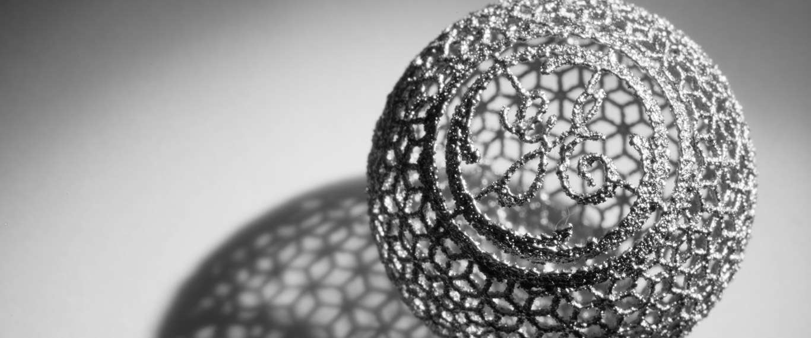
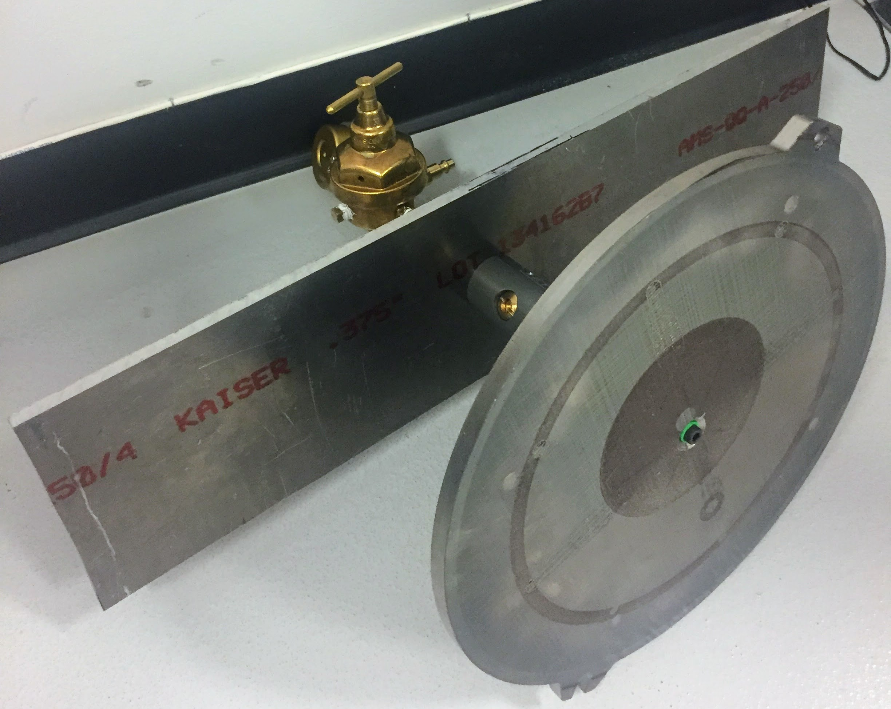

My Summer at GE Additive
About GE Additive
GE Additive is not only GE's newest branch, but it is the most innovate branch in the company. Through developemnt of both Direct Laser Metal Melt (DMLM) and Electron Beam Melt (EBM) technologies, GE has poised itself to be a leader in a rapidly expanding industry. GE has developed its own line of printers, including the first meter class DMLM machine, Atlas.
During the summer of 2017, I was a mechanical engineering intern working on the team responsible for the Atlas project. During my time, I focused mainly on assisting the other engineers with print charecterization, machine calibration, and troubleshooting of the MVP version of the printer. My main project was to create an all encompasing standard operating procedure (SOP) document to outline not only the safety risks involved with the machine, but also outline all the neccessary procedures to operate the machine. This SOP document that I created was so well recieved, that it is currently the standard for devloping further SOP's for developmental machines at GE Additive.
Powder Removal
Towards the end of my internship, I was given a project with another intern to produce a system that could better automate the powder removal from Arcam (EBM) builds. If you have ever worked with an EBM machine, you know that when the build comes out of the printer, the unused powder within the build volume has formed a solid that resembles a very weak sandstone. The general practice is to have a technician then remove the unused powder in a powder removal system that uses recycled powder like a sandblaster. This process works for developmental parts, but is not scalable for production.
The goal of this project was to create something that would automate this powder removal process and thus it had a few major constraints:
- Ease of Use: The goal was to make something so easy to use that there would be no reason not to use it.
- Maintain Original Functionality: We still wanted to maintain the powder evac system's original functionality. This meant that any solution would need to be disengaged easily.
- Durable: Not only would it have to withstand the sandblastic that occurs within the system, but also it would need to protect against metal fires due to the reactive nature of the metal powders that are printed with.
 The solution that we came up with had a couple components to its design that can be seen in the prototype pictured right.
- Instead of using an electrical motor, where a spark could ignite the powder, we decided to modify a pneumatic angle grinder. This not only allowed us to control the rotation easily from outside the enclose, but it also provided a reliable system especially in a harsh environment.
- The plate on top was made of a build plate from the Arcam printer. This would allow the technician to simply bolt the print to the system with the same mounting hardware used in the printer increasing its ease of use.
- Finally, I had to design a specialized valve for switching between the standard operation of the system, and the automated system. The goal for this valve was to leverage the technology found at GE Additive to produce a system that was simple and intuitive to use.
This valve was designed to be used in a completly different way than most T junction valves. In a standard valve, the user rotates a component and the flow travels in one of two directions. Because we wanted our system to turn on when you lifted it up from its resting position, we needed a valve that changed its flow into the component that you just rotated.